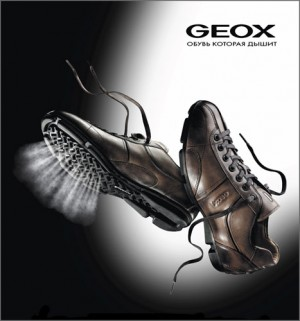

Мужская зимняя обувь Geox — отстой и пустая трата денег. Прошлые ботинки Geox убились за два года стояния под столом в офисе. Сдуру купил в прошлом году еще одни (то ли кризис ассортимента тогда был, то ли кризис ума — не вспомнить уже).
Через месяц полезли нитки, продавцы сказали несите — зашьем
Пресловутая дышащая подошва на деле означает, что в любую мало-мальски теплую погоду ноги будут мокрыми. В холодную погоду будут мокрыми и холодными.